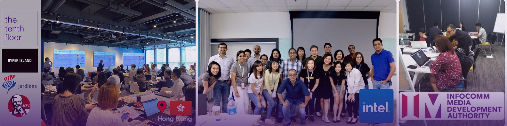

When the Playbook Stops Paying Back
Something changed in the relationship between experience and outcomes. What made accumulated judgment reliable no longer works the way it did, and the change is structural, not cyclical.
Experience is intact. The environment it was calibrated for has moved.
Every business strategy is built on a set of assumptions. In stable conditions, those assumptions compound. The decision that worked last year tends to work this year. Instincts refined over a decade become the shortcut that makes good judgment feel automatic.
That is how careers get built. It is also why the current moment is genuinely unusual.
The conditions under which most senior strategies were formed have shifted, not gradually, in the way that allows for adjustment, but sharply, in a way that leaves previously reliable rules producing the wrong answer to the right question.
The rules still work. But the world they were written for has shifted.
Here is the distinction that matters. A capability problem asks whether a leader or organisation has what it takes. A method problem asks whether the right approach is being applied to a changed environment. Treating them as the same problem is where expensive mistakes begin. A capability problem is solved by working harder or hiring differently. A method problem requires thinking differently: building a way of working that produces clarity even when the inherited rules have stopped producing it.
That is what The Tenth Floor was built to provide.
Two Disruptions. One Decade. Neither Is Over.
Markets became unpredictable in new ways. Technology commoditised the output organisations built their strategies around. Together, these forces changed what business leadership demands.
Start with the market layer. Policy shifts, geopolitical realignments, and supply disruptions that were once exceptional have become, by most measures, routine. The trade architecture governing commercial assumptions for two decades was altered within a single news cycle. Commodity prices, regulatory frameworks, and economic projections now move at a speed that makes quarterly planning look like long-range forecasting. Organisations still operating from assumptions that held a year ago are not operating from bad intelligence. They are operating from outdated intelligence, which is a different problem with a different solution.
The second disruption is technological. Its consequences are subtler, and in some ways more important. The widespread availability of AI tools means the traditional outputs of professional knowledge work (documents, analyses, models, recommendations) can now be produced at scale, at speed, and at a fraction of their former cost. This is frequently treated as a productivity story. It is more accurately a value story. When output is abundant, output stops being the differentiator. The scarce thing, the thing that now determines competitive position, is the judgment behind the output.
The question is not how to acquire more tools, or more data, or more capability. It is how to build the judgment that makes all three productive, and that holds its value when conditions keep shifting.
The Difference Between Investigating and Guessing
Most strategic errors do not begin with bad data or wrong instincts. They begin with the right answer applied to the wrong question. There is a method for finding the right question. Most organisations have never built it.
Strategic errors compound in a revealing way. Most do not begin with bad data or wrong instincts. They begin with the right answer applied to the wrong question.
Organisations accumulate rules (frameworks, models, decision criteria) that worked reliably under previous conditions. When a new problem arrives, the rule fires and produces an answer. The answer may be internally consistent with everything the organisation has previously learned. But if the conditions that made the rule reliable have shifted, the answer is wrong in a way that is hard to detect from inside the system that produced it. The rule looks like it should work. It no longer does.
Call this the fixed-rule approach. Its limitation is not incompetence or inattention. It is that the approach was built for a more stable world, and it does not update itself.
The investigative approach is structurally different. It begins not with an answer but with a hypothesis (an informed view of what the evidence is likely to show) and tests that hypothesis against whatever data exists. The data does not need to be clean or complete; most valuable evidence is neither. In most real-world conditions, waiting for perfect data means never deciding, with little or no action.

That method is what The Tenth Floor calls the Data Detective. It was not assembled from a consulting textbook, but was built inside the conditions that organisations are currently being asked to navigate.
Built Inside Disruption. Not Adapted to It.
There is a meaningful difference between a firm that adapted its positioning when disruption became fashionable and one that was operating inside the disruption from the beginning. The Tenth Floor is the latter.
The Tenth Floor was founded in 2015, at the start of a rapid sequence of structural commercial disruptions. That decade was the working environment, not the backdrop.
Digital transformation. Global trade fragmentation. Pandemic-forced commercial rebuilds. The end of cheap capital. The first waves of AI operating at the judgment layer. Each disruption invalidated a different set of assumptions. Each produced the same lesson: the organisations that built evidence-based decision-making through the disruption, rather than waiting for stability to return, outperformed those that waited.
The Data Detective method operates on five principles.
The method was refined across ten years of that work. It is not a framework picked off a shelf. It is what The Tenth Floor is.
The answer was always in the evidence.
Twelve engagements. Four continents. Multiple industries. In every case, the answer was not in the obvious place. It was in the evidence no one had thought to examine.


Different situations. One starting point.
The leaders who come to The Tenth Floor are not uniform in their circumstances. The method that produces clarity is.
In every case, the question is not whether the capability exists. It does. The question is whether there is a method that makes that capability produce clear, defensible outcomes in an environment that has changed around it.
The people present on the first day are the people present on the last.
Most consulting engagements begin with senior partners and end with junior teams. The Tenth Floor is structured differently. Two senior leaders run every engagement, present in every meeting, every decision, every deliverable, from first conversation to final day. The thinking does not change hands. The relationship does not change hands. The client works with the people doing the work.

Twenty-five years in global marketing strategy. Former Managing Director of JWT Malaysia. Former Head of Integrated Strategy at McCann Singapore.
The decade of work that produced the Data Detective method was built under Subhendu’s direction. Every major disruption since 2015 has been a live engagement context, not a case study from a safer era.
Brand strategist with sustained experience across SEA and MENA markets. Career spanning Executive Creative Director, Head of Strategy, and analytical lead inside the investigative work.
Hasnah brings the analytical and strategic depth that translates evidence into decisions that hold under commercial pressure.
Consulting Advisors
28 years across marketing strategy and digital transformation — WPP, Publicis, and Interpublic; then FutureMarketer (successful exit) and Maxential, which has trained 15,000+ executives at 80+ organisations across 45 countries. Adjunct Faculty at SMU, Rutgers, and Duke Corporate Education. Angel investor in Web3, analytics, and marketing technology.
Fixed scope. Fixed fee. Everything transfers.
Every engagement is fixed scope and fixed fee. No dependency created by design. The engagement is built from the beginning so that it ends. Everything produced (the findings, the dashboards, the method, the measurement instrument) belongs to the client’s team from the moment the work concludes. We are here until you don’t need us, and that is deliberately how we build the work.
The most reliable test of a method is not its theoretical coherence. It is what happens when it is applied to real problems, in real conditions, with real commercial consequences on the other side. Across twelve engagements, four continents, and a decade of disruption, that test has been run consistently.
The first step is always a conversation.
Not a pitch. Not a proposal. A direct meeting with the leadership team about the real question underneath the stated problem.
Fixed scope. Fixed fee. No dependency created. No lock-in. Every output belongs entirely to the organisation when the work concludes.
The Leadership Team Is Taking Meetings
No pitch. No proposal. A conversation about the real question underneath the problem.
A specific, defensible answer to the question that is actually worth asking, and the method to keep producing those answers confidently, independently.